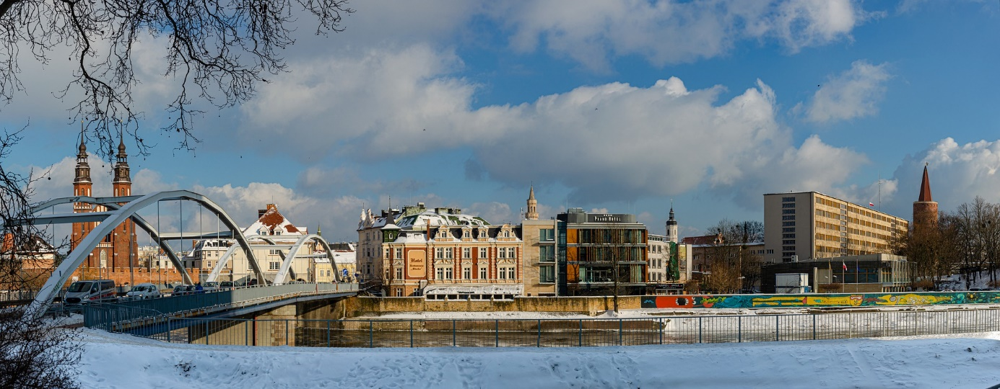
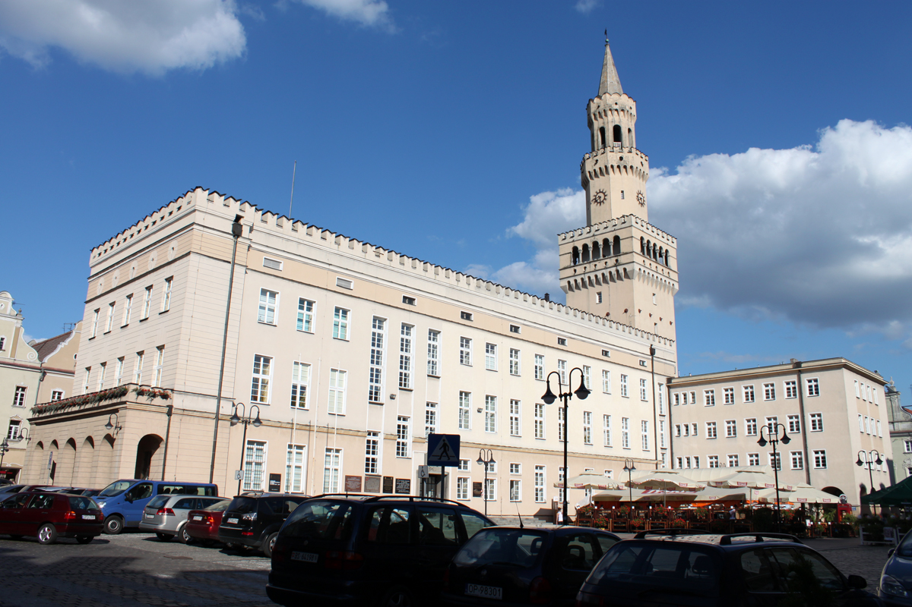

a
Opole
Jedno z najstarszych miast w Polsce. W czasach średniowiecza i renesansu Opole było centrem handlu dzięki jego położeniu na kilku szlakach handlowych. Przez opole przepływa druga co do wielkości rzeka Polski, Odra
Ciekawe miejsca w Opolu:
-Ratusz w Opolu – budynek w Opolu, znajdujący się w dzielnicy Śródmieście. Wzniesiony w 1864 i częściowo w 1936 roku, w stylu neorenesansowym na wzór florenckiego pałacu Vecchio w miejscu wcześniejszej budowli.
Autorstwa Raddeck, CC BY-SA 3.0 https://commons.wikimedia.org/wiki/File:Ratusz_w_Opolu_-_calosc.jpg
-Rynek w Opolu - zachował średniowieczny kształt, typowy dla ówczesnych miast tego regionu. Początkowo zabudowa była drewniana, co sprzyjało rozprzestrzenieniu się pożarów, więc już od XIV wieku zaczęły pojawiać się domy murowane. W tym też okresie w mieście pojawił się ratusz, który z drewnianego domu kupieckiego stał się siedzibą władz i został przebudowany przy użyciu cegieł. Po licznych przebudowach, spowodowanych pożarami, ratusz zyskał kształt wzorowany na budynkach weneckich. W 1933, po rozebraniu przylegających do niego kamienic, runęła wieża ratuszowa. Odbudowano ją w nieco innym stylu, do budynku ratusza dobudowano też południowe skrzydło, wzbogacone arkadami (1936).
https://commons.wikimedia.org/wiki/File:RingWest_Opole.jpg
-Zoo w Opolu – Zlokalizowane jest na wyspie Bolko, która jest również wielką atrakcją miasta, swój dom ma tam ponad 1000 zwierząt reprezentujących ponad 220 gatunków.
Autorstwa Marcin Białek - Praca własna, CC BY-SA 4.0
https://commons.wikimedia.org/w/index.php?curid=7563688
-Muzeum Polskiej Piosenki w Opolu – muzeum działające jako samorządowa instytucja kultury miasta Opole, założone w 2007 roku. Prowadzi działalność polegającą na gromadzeniu, katalogowaniu, konserwowaniu i udostępnianiu zbiorów dotyczących polskiej piosenki. Muzeum Polskiej Piosenki jest jedyną instytucją w Polsce, której głównym celem jest utworzenie centrum informacji na temat polskiej piosenki, a także ochrona jej dorobku